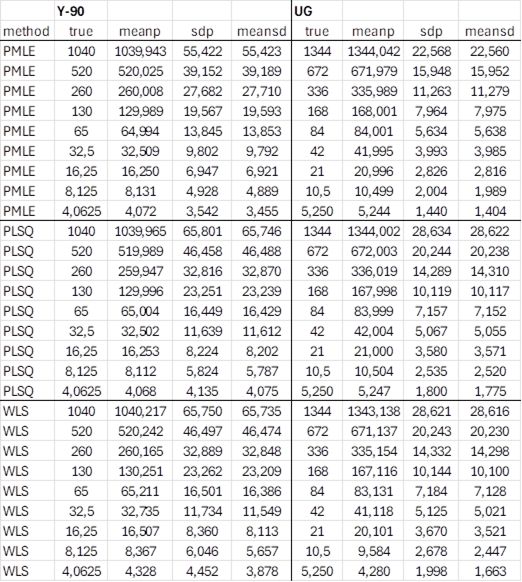

5.19. Das PMLE-Verfahren für lineare Entfaltung¶
5.19.1. PMLE in UncertRadio¶
Das Verfahren der Poisson MLE (PMLE) erfordert, dass die abhängigen Größen in der Entfaltung, z.B. die Impulsanzahlen einer Abklingkurve, Poisson-verteilt sind. Da letztere bei den anderen Methoden der Entfaltung bisher als Nettozählraten verwendet worden sind, werden die Nettozählraten programmintern lediglich in Bruttoimpulsanzahlen konvertiert. Die Bruttoimpulsanzahlen einer Abklingkurve
\(N_{b,i} = \left( R_{b,i} + R_{0,i} + R_{bl} \right) \cdot t_{m}\) ; \(u\left( N_{b,i} \right) = \sqrt{N_{b,i}}\)
werden als nicht-korreliert betrachtet. \(t_{m}\) muss für alle Zählraten denselben Wert haben, andernfalls wäre die Form der Abklingkurve der Bruttoimpulsanzahlen gestört.
Soll zum Beispiel eine Y-90-Abklingkurve angepasst werden, wird aus der dazugehörigen Modellgleichung in der Nettozählraten-Darstellung
\(R_{b,i} = y_{1} \cdot X_{1}\left( t_{i} \right)\)
das Modell für die PMLE-Anpassung:
\(N_{b,i} = \left( y_{1} \cdot X_{1}\left( t_{i} \right) + y_{2} \cdot 1 \right) \cdot t_{m}\)
Dazu wurde eine zweite Fitfunktion eingeführt, mit dem Fitparameter \(y_{2}\) und \(X_{2}\left( t_{i} \right) = 1\). Der Parameter \(y_{2}\) repräsentiert die Summe aus Nulleffekt und Blindwert, \(\left( R_{0,i} + R_{bl} \right)t_{m};\) er wird mit dem PMLE-Verfahren angepasst und kann dabei einen Wert bekommen, der von dem bekannten Wert \(\left( R_{0,i} + R_{bl} \right)t_{m}\) abweichen kann.
Features:
Dieses Verfahren benötigt einen Anpassungsparameter mehr als die anderen Verfahren zur Anpassung von Nettozählraten-Abklingkurven. In UncertRadio kann es daher nur angewendet werden, wenn nicht mehr als zwei physikalische Komponenten zu bestimmen sind. Beide diese zwei Komponenten sollten die Eigenschaft haben, dass ihre zugehörigen Kurven sich von konstant oder quasi-konstant über die Zeit unterscheiden. Wenn eine dieser Komponenten den Beitrag eines Radionuklids mit eher großer Halbwertszeit darstellt, sodass die Abklingkurve keinen Abfall zeigt, kann das Anpassungsverfahren nicht zwischen diesem Beitrag und dem von \(\left( R_{0,i} + R_{bl} \right)t_{m}\) unterscheiden. In einem solchen Fall kann das PMLE-Verfahren nicht verwendet werden.
Das PMLE-Verfahren kann in dem Programm derzeit auch dann nicht angewählt werden, wenn, wie im Falle von Sr-Messungen mit zugesetztem Sr-85-Tracer, der Fitparameter für das Sr-85 auf den Status „fixieren” gesetzt wurde.
Das PMLE-Verfahren ist auch dann nicht auswählbar, wenn zu wenige Messpunkte im Vergleich zur Anzahl der anzupassenden Parameter vorliegen.
Anwendung des Verfahrens:
Die Daten im Dialog „Eingabe der Abklingkurve” werden ebenso aufgenommen wie bei den anderen Verfahren, daran ändert sich nichts.
Wurde das Projekt bereits für z.B. die Verwendung eines WLS-Verfahrens erstellt, hat das Programm bereits die nötigen Informationen über die anzupassenden physikalischen Komponenten und kann entscheiden, ob die oben genannten Kriterien für die Anwendung des PMLE zutreffen. Falls die Kriterien nicht erfüllt sind, wird in dem Modell-Dialog „Modell der Abklingkurve” die Auswahl des PMLE-Verfahrens verhindert.
Ist die Anwahl des PMLE-Verfahrens im Modell-Dialog erlaubt, wird nach dessen Selektion das Verfahren wie üblich ausgewertet. Lediglich in der Ansicht der Anpassung () werden Bruttozählraten anstelle von Nettozählraten dargestellt.
5.19.2. Grundlagen des PMLE-Verfahrens¶
Für Abklingkurven der Bruttozählraten, die mit niedrigen Poisson-verteilten Impulsanzahlen gemessen werden, ist das Poisson MLE (PMLE) Fitverfahren besser geeignet als das gewichtete Least-squares Verfahren (WLS). Entsprechende Testergebnisse dazu wurden bereits am Ende von Abschnitt 5.4.2 vorgestellt. Leider ist für dieses Verfahren eine nicht-lineare Entfaltung erforderlich. Dafür wird hier die von H. P. Gavin publizierte Matlab-Routine Lm zur Umsetzung das Levenberg-Marquardt-Verfahrens verwendet. Diese wurde in Fortran konvertiert und in zweierlei Hinsicht modifiziert bzw. erweitert:
das PMLE mit seiner speziellen Definition des Chi-Quadrats (siehe Chi-Quadrat-Optionen) erfordert eine Modifikation der Levenberg-Marquardt (LM) Matrix-Algebra;
zur Stabilisierung des Fittens („penalized fitting”) wird ein zusätzlicher Chi-Quadrat-Term einbezogen, der dafür sorgt, dass die Fitparameter sich während der nicht-linearen Iteration nicht zu weit von ihren Startwerten entfernen.
Bezogen auf die von H. P. Gavin in seinem Paper benutzte Nomenklatur skizziert die folgende Tabelle in Kürze die vorgenommenen Erweiterungen der mathematischen Behandlung. In der ersten Spalte sind die Gleichungsnummern bei Gavin aufgeführt. Die Unterschiede zwischen den Formeln für Levenberg-Marquard (links) und denen für die PMLE-Modifikation (rechts) manifestieren sich hauptsächlich in den verwendeten Kovarianz-Matrizen \(\mathbf{W}_{\mathbf{0}}\) (links) und \(\mathbf{W}_{\mathbf{1}}\) und \(\mathbf{W}_{\mathbf{2}}\) (rechts). \(p_{f}\left( \mathbf{p} - \mathbf{p}_{\mathbf{c}} \right)^{T}\mathbf{W}_{\mathbf{c}}\left( \mathbf{p} - \mathbf{p}_{\mathbf{c}} \right)\) stellt den zusätzlichen Term für die Stabilisierung dar. \(\mathbf{J}\) bezeichnet die Jacobi-Matrix der ersten partiellen Ableitungen der Funktion \(f\) nach den Parametern \(\mathbf{p}\).
Eq. |
LM-procedure by Gavin, with stabilization included |
LM-PMLE-procedure by Gavin, modified for PMLE and stabilisation |
\(\chi^{2}_c(p) = \chi^{2}(p) + p_f(p-p_c)^T \cdot W_c \cdot (p-p_c)\) |
\(\chi^2{2}_c(p)=\chi^{2}_{LP} + p_f(p-p_c)^T \cdot W_c \cdot (p-p_c)\) |
|
\(\frac{\partial \chi^{2}_c}{\partial p} = \frac{\partial \chi^{2}}{\partial p} + p_f 2 (p-p_c)^T \cdot W_c\) |
\(\frac{\partial \chi^{2}_c}{\partial p} = \frac{\partial \chi^{2}_{LP}}{\partial p} + p_f 2 (p-p_c)^T \cdot W_c\) |
|
\([J^T W_0 J + p_f W_c] \cdot h_{gn} = J^T W_0 (y-f(p))\) |
\([J^T W_2 J + p_f W_c] \cdot h_{gn} = J^T W_1 (y-f(p))\) |
|
\([J^T W_0 J + p_f W_c + \lambda \cdot diag(J^T W_0 J + p_f W_c)] h_{lm}=\) |
\([J^T W_2 J + p_f W_c + \lambda \cdot diag(J^T W_2 J + p_f W_c)] h_{lm}=\) |
|
(13+) |
\(=J^T W_0 (y-f(p))\) |
\(=J^T W_1 (y-f(p))\) |
\(\rho_i(h_{lm})=\frac{\chi^2(p) - \chi^2(p+h_{lm})} { h^T_{lm} {\lambda\cdot diag(J^T W_0 J + p_f W_c)} h_{lm} + J^T W_0 d }\) |
\(\rho_i(h_{lm})=\frac{\chi^2(p) - \chi^2(p+h_{lm})} { h^T_{lm} {\lambda\cdot diag(J^T W_2 J + p_f W_c)} h_{lm} + J^T W_0 d }\) |
|
(16+) |
\([J^T W_0 d] = J^T W_0 (y-f(p)) - p_f W_c (p-p_c)\) |
\([J^T W_1 d] = J^T W_1 (y-f(p)) - p_f W_c (p-p_c)\) |
\(W_0 = diag(1/y_i)\) |
\(W_1 = diag(1/f_i)\) |
|
\(W_c = diag(1/u^2(p_{ci}))\) |
\(W_2 = diag(y_i/f^2_i)\) |
Test mit MC-Simulationen
Die Leistungsfähigkeit des Verfahrens wird am Beispiel einer Y-90-Abklingkurve mit 9 Messpunkten gezeigt (Beispiel-Projekt vTI-Y90-16748_Blw_V2_DE.txp). Das Projekt wurde dafür geändert, indem die Bruttoimpulsanzahl des 9ten Punkts von seiner kurzen Messdauer (28200 s) auf die Messdauer von 72000 s hochgesetzt wurde. Die erforderlichen MC-Simulationen wurden mit einer separaten Fortran-Routine durchgeführt. Das Modell für die PMLE-Anpassung der Bruttoimpulsanzahlen \(N_{b,i}\) lautet (\(y_1\), Parameter für den Y-90-Anteil; \(y_2\): Parameter für die Summe UG aus Nulleffekt-Impulsanzahl und Blindwert-Impulsanzahl (72000 s)):
\(X_1(t_i)\) bedeutet die Y-90-Abkorrektur für 9 mal \(t_i\). Für Startwerte der Impulsanzahlen \((y_1,y_2) = (1040,1344)\) wurden 9 „wahre” Werte von \(N_{b,i}\) gemäß der letzten Gleichung berechnet. Nach deren Ersetzung durch Poisson-verteilte zufällige Impulsanzahlen wurden diese angepasst und lieferten Werte \((y^{'}_1,y^{'}_2)\). Dieser Schritt wurde \(10^6\) mal wiederholt. Dadurch konnten statistische Informationen, getrennt für \((y^{'}_1)\) und \((y^{'}_2)\), entnommen werden:
true |
given start value |
meanp |
mean of the MC-values |
sdp |
MC standard deviation of the values estimating the dispersion |
meansd |
Mittelwert der von der Anpassungsroutine für jede der \(10^6\) Fits geschätzten Standardabweichungen |
Die bisher beschriebene Schrittfolge wird 8-mal wiederholt, indem die Startwerte jeweils durch zwei geteilt werden. All dies wurde jeweils dreimal für die Anpassungsmethoden PMLE (nichtlinear) sowie PLSQ und WLS (linear) ausgeführt. Die erhaltenen statistischen Daten sind in der folgenden Tabelle dargestellt. Insgesamt werden die vorgegebenen wahren Werte recht gut durch meanp wiedergegeben; nur für kleine Impulsanzahlen werden für das WLS-Verfahren einige Abweichungen beobachtet. Eine gute Übereinstimmung der Werte für sdp („real dispersion”) und meansd (Standardabweichung geschätzt durch das Anpassungsverfahren) bedeutet statistische Konsistenz. Es wird beobachtet, dass das WLS-Verfahren für niedrige Impulsanzahlen wiederum weniger konsistent ist. Die Auswertung dieses Tests zeigt auch, dass die PMLE-Methode niedrigere, aber statistisch konsistente Schätzungen der die Impulsanzahlen beschreibenden Parameter liefert.
